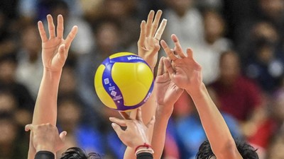

Permainan bola besar berupa voli ini berasal dari Amerika Serikat dengan penciptanya adalah William G. Morgan pada tahun 1895. Awalnya, permainan bola voli ini bernama “Mintonette” yang mana pola permainannya justru lebih mirip dengan badminton. Pada permainan Mintonette ini jumlah pemainnya tidak terbatas sebab tujuannya hanya semata-mata untuk mengembangkan kesegaran dan kebugaran jasmani saja.
Kemudian, permainan tersebut berkembang hingga berubah nama menjadi Volleyball yang berarti mem-voli bola secara bergantian. Bahkan ketika terjadi Perang Dunia II, permainan ini semakin menyebar ke seluruh dunia terutama di wilayah Eropa dan Asia. Sayangnya, setelah Perang Dunia II usai, permainan ini justru menurun popularitasnya di wilayah AS, sementara di wilayah Eropa Timur dan Asia berkembang semakin cepat.
Pada sekitar tahun 1928, permainan ini baru masuk ke Nusantara yang mana disebarkan oleh tentara Belanda. Hingga kemudian pada 22 Januari 1945, dibentuklah Persatuan Bola Voli Seluruh Indonesia (PBVSI) di Jakarta bersamaan dengan kejuaraan di Yogyakarta.
Service bawah: pemain melakukan pukulan dengan satu tangan di bawah atau sejajar pada pinggang supaya bola dapat melewati net. Teknik ini sering digunakan oleh pemain pemula dan pemain wanita, sebab merupakan teknik dasar paling mudah.
Service atas: pemain melambungkan bola ke arah atas kepala pemain sebelumnya akhirnya dipukul hingga dapat melewati net. Tujuan dari teknik ini adalah membuat bola menukik tajam ke bidang lawan. Penggunaan teknik ini membutuhkan skill yang lebih tinggi dibandingkan dengan service bawah.
Passing Atas: yakni dengan menggunakan ujung jari-jemari saat bola datang ke arah pemain setinggi bahu atau lebih. Tujuan dari teknik ini adalah untuk membangun serangan sehingga rekan satu tim dapat melakukan teknik spike atau smash.
Passing Bawah: yakni dengan sikap tubuh setengah jongkok, lutut ditekuk, dan kedua tangan dirapatkan secara lurus. Biasanya, teknik ini digunakan ketika arah bola datang setinggi di atas paha.
Spike adalah teknik yang berupa pukulan dengan keras yang mana merupakan salah satu jenis serangan. Sementara smash adalah serangan dari depan dengan cara memukul bola sekeras-kerasnya.
Dilakukan dengan cara mengangkat lengan setinggi mungkin di atas jaring, demi menghalangi datangnya bola yang dipukul oleh musuh. Dapat dibilang teknik dasar ini dilakukan di depan net.
Panjang: 18 meter
Lebar: 9 meter
Panjang: 9,50 meter
Lebar: 1,00 meter
Mata net: 10 cm
Berat: 250-280 gram
Keliling: 65-70 cm
Jumlah pemain yang turun ke lapangan adalah 6 orang untuk setiap tim, ditambah 5 orang sebagai pemain cadangan dan pemain libero.